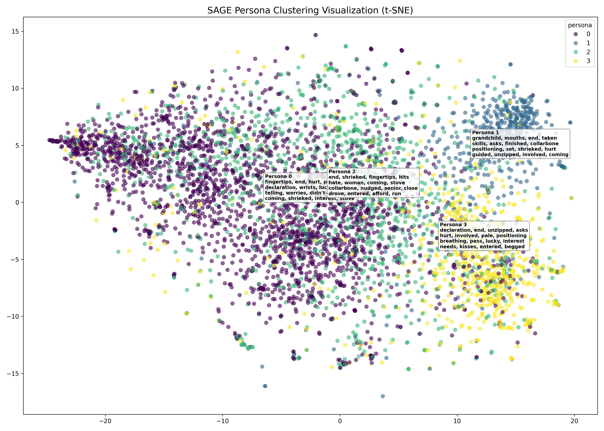
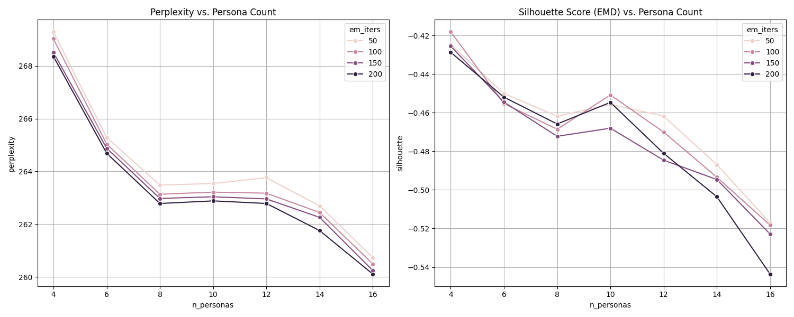

上海小说人物聚类深度分析报告 (N=4, IT1000)
基于 SAGE 算法 · 1000 次 EM 迭代 · 4,860 位文学角色
♂ 48.7%
♀ 37.9%
叙述者与核心主角 (Past Tense): 包含大量第一人称 'I' 或第三人称过去时叙事中的主角。关键词以过去式动词为主（said, had, looked）。这是规模最大的群体，涵盖了各书中出场最稳健的核心人物。
代表人物: Character_0 (The_Valley_of_Amazement), Character_0 (Peach_Blossom_Pavillion), Character_0 (The_Distant_Land_of_My_Father), Character_0 (All_the_Flowers_in_Shanghai), Franz (The_Far_Side_of_the_Sky_Adler_Family_1)
核心关键词: said, had, looked, told, asked, took, thought, saw, knew, felt
♂ 51.7%
♀ 40.4%
现在时主角与互动型人物 (Present Tense): 显著特征是现在时动词（says, looks, asks）。这反映了现代都市或特定风格小说中的实时叙事模式，女性比例较高（40.4%），包含多位具有强烈主体性的女性主角。
代表人物: Character_0 (Shanghai_Immortal), Juliette (These_Violent_Delights), Yuliang (The_Painter_From_Shanghai), Character_0 (Blue_Hunger_Viola_Di_Grado), Mr Lee (Shanghai_Immortal)
核心关键词: says, said, know, have, has, looks, asks, see, had, tell
♂ 43.8%
♀ 30.3%
社交与都市生活型配角 (Social/Urban): 出场频次中等，多见于当代上海背景小说。关键词涉及更具体的社交互动。女性比例约为30%，包含多位都市职业女性配角。
代表人物: Character_0 (Dreams_of_Joy), Phoebe (Five_Star_Billionaire), Character_0 (Shanghailanders), Character_0 (Dont_Cry_Tai_Lake), Lindsey (Rabbit_Moon)
核心关键词: said, had, have, know, told, see, tell, knew, want, asked
♂ 21.8%
♀ 19.0%
边缘与特定情节驱动型 (Peripheral/Relational): 规模最小，出场频次最低。关键词稀疏度高，主要由家庭关系或特定背景定义的配角构成。
代表人物: Character_0 (The_Shanghai_Moon), Character_0 (Shanghai_Girls), Character_0 (Becoming_Madame_Mao), Knox (The_Risk_Agent), Character_0 (A_Loyal_Character_Dancer)
核心关键词: know, have, think, said, want, see, tell, do, told, had
t-SNE 降维可视化

展示了人物在 1000 个词簇分布空间中的聚类形态，各中心标注了该类最具代表性的词丛。
网格搜索指标趋势

在 N=4 时，模型展现了最优的 Silhouette 分离度，是语义划分最稳健的层级。